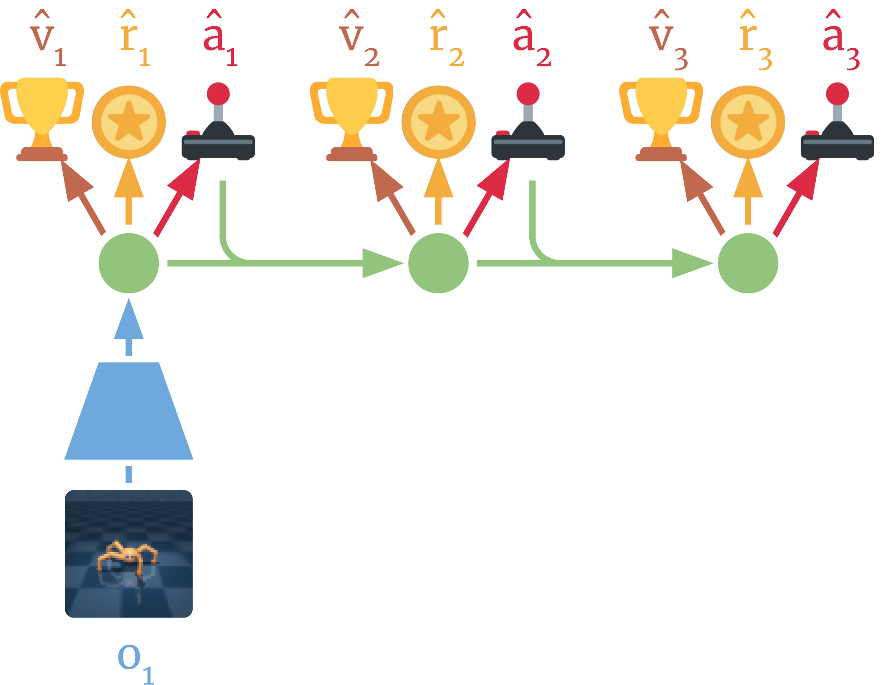
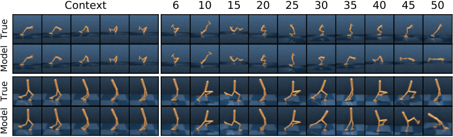
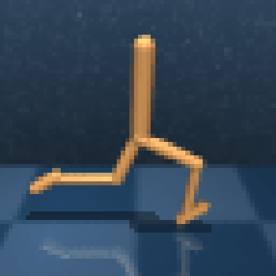

Dream to Control: Learning Behaviors by Latent Imagination
原论文摘要 · English Abstract
Learned world models summarize an agent's experience to facilitate learning complex behaviors. While learning world models from high-dimensional sensory inputs is becoming feasible through deep learning, there are many potential ways for deriving behaviors from them. We present Dreamer, a reinforcement learning agent that solves long-horizon tasks from images purely by latent imagination. We efficiently learn behaviors by propagating analytic gradients of learned state values back through trajectories imagined in the compact state space of a learned world model. On 20 challenging visual control tasks, Dreamer exceeds existing approaches in data-efficiency, computation time, and final performance.
从经验学世界模型
用经验训练 RSSM 世界模型
隐空间想象未来
从真实状态出发想象 H 步轨迹
价值模型估计回报
用价值模型补全视界外的回报
解析梯度更新策略
梯度穿过想象轨迹更新动作与价值模型
执行并收集新经验
执行策略、收集经验、再学模型
问题与动机
视觉控制难在三个地方同时出现：观测是高维像素、环境是部分可观的、好的行为需要长视距的信用分配。无模型方法能学会，但代价极大——最强的 D4PG 需要 $10^8$ 环境步；而上一篇 PlaNet 虽然数据高效，却要在每一步在线做规划，算得慢，而且只看固定视界内的想象奖励，容易短视。
论文要解决的正是这个夹在中间的问题：从世界模型导出行为，到底应该用“在线规划”还是“离线学一个策略”？作者指出，已有做法各有短板：参数化策略只优化视界内奖励会短视；在线规划每步都要重新算，无法把算过的东西沉淀下来；而无导数优化（如 CEM）为了对模型误差鲁棒，主动放弃了神经网络动力学本来提供的解析梯度，等于放着现成的梯度信息不用。
于是论文立下三个可检验的目标：能否完全在想象中、不消耗真实环境步数地学会长视距行为；能否在数据效率、计算时间、最终性能三项上同时超过已有方法；以及同一套方法能否覆盖连续动作、离散动作与提前终止的任务。
- 观测为 $64\times 64\times 3$ 像素图像，动作 1–12 维，奖励在 0–1 之间，回合长 1000 步
- 20 个 DeepMind Control Suite 任务，同一套超参数跑全部任务
- 基线：D4PG（最强无模型）、A3C、PlaNet（同一世界模型加在线规划）
- 动作重复 $R=2$ 全任务固定，不再逐任务调参
核心思想
Dreamer 的核心思想可以浓缩成三步闭环：从经验中学一个世界模型；在世界模型的紧凑隐空间里想象未来；用 actor-critic 加解析梯度在想象中学行为。其中最关键的一步是价值模型：它把想象视界之外的回报折现进来，让短视界的想象也能学到长视距的行为。
想象中的环境本身是一个完全可观的 MDP，因为隐状态 $s_\tau$ 是马尔可夫的——给定当前隐状态与动作，下一步分布不再依赖更早的历史。想象轨迹从真实经验的状态出发，沿转移模型、奖励模型与动作模型向前推演，优化目标是最大化折现想象回报：
$$\mathbb{E}_q\left(\sum_{\tau=t}^{\infty}\gamma^{\tau-t}r_\tau\right)$$
这里 $q$ 是想象轨迹的分布（由转移模型与动作模型共同决定），$\gamma$ 是折扣因子，$r_\tau$ 是想象奖励，$\tau$ 是想象时间的下标。注意求和到无穷远，但实际想象只推 $H$ 步，视界之外的部分由价值模型补上。
与三类已有方法对比，能看清这个设计的独特性：REINFORCE 一类的方法（A3C、PPO）用得分函数估计器优化策略，方差大；DDPG、SAC 只对即时 $Q$ 值求梯度，梯度不穿过转移模型；MVE、STEVE 虽然用多步 $Q$ 学习，但仍依赖经验回放而非纯想象。Dreamer 是第一个把“解析价值梯度穿过学到的隐动力学”规模化到像素控制的工作。
- 行为学习完全发生在想象中，不消耗真实环境步数
- 价值模型让短视界想象也能学到长视距行为
- 世界模型固定时学行为；行为学好后执行、收集新经验、再学模型
- 同一条想象轨迹同时更新动作模型与价值模型
模型结构与关键机制
世界模型由三个分布组成，论文记为公式（1）。表征模型看图像编码当前状态，转移模型不看图像向前预测，奖励模型从状态预测奖励：
表征模型：
$$p_\theta(s_t\mid s_{t-1},a_{t-1},o_t)$$
转移模型：
$$q_\theta(s_t\mid s_{t-1},a_{t-1})$$
奖励模型：
$$q_\theta(r_t\mid s_t)$$
这里 $s_t$ 是紧凑隐状态，$o_t$ 是图像观测，$a_t$ 是动作，$r_t$ 是奖励，$\theta$ 是世界模型参数；$p$ 表示真实环境中产生样本的分布，$q$ 是可用于想象的近似分布。实现上是 RSSM：循环确定性状态结合 30 维对角高斯随机状态，CNN 编码器与解码器沿用 World Models 的结构，观测模型 $q_\theta(o_t\mid s_t)$ 只提供重建学习信号，推理时不用。
动作模型与价值模型是行为学习的主角。动作模型输出策略分布，价值模型估计从当前隐状态出发能获得的未来折现回报之和：
动作模型：
$$a_\tau\sim q_\phi(a_\tau\mid s_\tau)$$
价值模型：
$$v_\psi(s_\tau)\approx\mathbb{E}_{q(\cdot\mid s_\tau)}\left(\sum_{\tau=t}^{t+H}\gamma^{\tau-t}r_\tau\right)$$
这里 $\phi$ 是动作模型参数，$\psi$ 是价值模型参数，$H$ 是想象视界。动作采样用重参数化的 tanh 高斯分布：
$$a_\tau=\tanh(\mu_\phi(s_\tau)+\sigma_\phi(s_\tau)\epsilon),\quad \epsilon\sim\mathcal{N}(0,I)$$
这里 $\mu_\phi$ 与 $\sigma_\phi$ 是网络输出的均值与标准差，$\epsilon$ 是标准正态噪声，$I$ 是单位矩阵，tanh 把动作压到有界区间；重参数化的关键是采样动作对网络输出可导，梯度才能穿过采样操作继续反向传播。
价值估计是全文技术含量最高的部分。先定义只加视界内奖励的短视估计、再定义用价值模型补 $k$ 步之后回报的 $k$ 步估计，最后指数加权平均得到 $\lambda$-return：
$$\mathrm{V}_\mathrm{R}(s_\tau)=\mathbb{E}_{q_\theta,q_\phi}\left(\sum_{n=\tau}^{t+H}r_n\right)$$
$$\mathrm{V}_\mathrm{N}^k(s_\tau)=\mathbb{E}_{q_\theta,q_\phi}\left(\sum_{n=\tau}^{h-1}\gamma^{n-\tau}r_n+\gamma^{h-\tau}v_\psi(s_h)\right),\quad h=\min(\tau+k,t+H)$$
$$\mathrm{V}_\lambda(s_\tau)=(1-\lambda)\sum_{n=1}^{H-1}\lambda^{n-1}\mathrm{V}_\mathrm{N}^n(s_\tau)+\lambda^{H-1}\mathrm{V}_\mathrm{N}^H(s_\tau)$$
这里 $\mathrm{V}_\mathrm{R}$ 忽略视界外的奖励，是论文用来做消融的短视基线；$\mathrm{V}_\mathrm{N}^k$ 在 $k$ 步后用价值模型 $v_\psi(s_h)$ 封顶，$h$ 是 $\tau+k$ 与视界末端 $t+H$ 的较小者；$\lambda$ 在 0 与 1 之间插值，$\lambda=0$ 是单步自举（偏差大、方差小），$\lambda=1$ 是全程蒙特卡洛（偏差小、方差大），论文取 $\lambda=0.95$。
还有一个容易忽略的细节：在会提前终止的任务里，世界模型还从每个隐状态预测折扣因子，目标函数里的每一项按预测折扣的累积乘积加权——想象轨迹越可能已经终止，权重越小，这样价值目标才不会把已终止轨迹上的奖励继续算进去。
- 隐状态 $s_t$ 是 30 维对角高斯，兼有循环确定性分量与随机分量
- 观测模型 $q_\theta(o_t\mid s_t)$ 只提供重建学习信号，推理时不用
- 动作、价值、奖励模型均为 3 层 300 单元 ELU 全连接网络
- KL 正则系数 $\beta=1$，并截断在 3 个自由纳特以下
- 离散动作时动作模型输出类别分布，用直通梯度通过采样


训练与推理流程
算法 1 把智能体的一生写成三个交替阶段。第一，动力学学习：从经验库抽 50 条长 50 的序列，用表征模型算出 $s_t$，按重建目标更新世界模型参数 $\theta$；第二，行为学习：从 batch 里真实状态出发想象 $H=15$ 步，算出想象奖励、价值与 $\mathrm{V}_\lambda$，更新动作模型与价值模型；第三，环境交互：执行动作模型收集新经验，再回到第一步。
行为学习的目标函数是 actor 与 critic 各一个。动作模型最大化价值估计之和，价值模型回归 $\mathrm{V}_\lambda$ 目标：
$$\max_\phi\mathbb{E}_{q_\theta,q_\phi}\left(\sum_{\tau=t}^{t+H}\mathrm{V}_\lambda(s_\tau)\right)$$
$$\min_\psi\mathbb{E}_{q_\theta,q_\phi}\left(\sum_{\tau=t}^{t+H}\frac{1}{2}\lVert v_\psi(s_\tau)-\mathrm{V}_\lambda(s_\tau)\rVert^2\right)$$
这里 $\phi$ 是动作模型参数，$\psi$ 是价值模型参数；价值目标 $\mathrm{V}_\lambda$ 处停止梯度，是标准的 critic 回归做法。梯度链是：价值估计依赖奖励与价值预测，奖励与价值预测依赖想象状态，想象状态依赖想象动作，想象动作依赖策略参数——于是梯度一路反向穿过整条想象轨迹到达 $\phi$。行为学习时世界模型参数 $\theta$ 固定。
世界模型本身按变分下界训练，重建目标由三项相加：图像重建对数似然、奖励预测对数似然、以及表征与转移先验之间的 KL 正则：
$$\mathcal{J}_\mathrm{REC}=\mathbb{E}_p\left(\sum_t(\mathcal{J}_\mathrm{O}^t+\mathcal{J}_\mathrm{R}^t+\mathcal{J}_\mathrm{D}^t)\right)+\mathrm{const}$$
其中 $\mathcal{J}_\mathrm{O}^t=\ln q(o_t\mid s_t)$ 是图像重建项，$\mathcal{J}_\mathrm{R}^t=\ln q(r_t\mid s_t)$ 是奖励预测项，$\mathcal{J}_\mathrm{D}^t=-\beta\,\mathrm{KL}(p(s_t\mid s_{t-1},a_{t-1},o_t)\parallel q(s_t\mid s_{t-1},a_{t-1}))$ 是 KL 正则项，$\beta$ 是正则系数。另有对比目标 $\mathcal{J}_\mathrm{NCE}$：用状态模型 $q_\theta(s_t\mid o_t)$ 代替像素解码器，以噪声对比估计防止表征坍缩；纯奖励预测目标作为第三种对照。
执行时的细节同样重要：经验库先用 5 回合随机动作初始化；之后每 100 个训练步采 1 回合，执行动作模型的众数动作再加 $\mathcal{N}(0,0.3)$ 的探索噪声；三个学习率分别为 $6\times 10^{-4}$（世界模型）、$8\times 10^{-5}$（价值与动作模型），梯度范数裁剪到 100；离散动作任务改用 $H=10$、$\beta=0.1$、奖励经 tanh 有界、$\epsilon$-贪心从 0.4 线性衰减到 0.1。
- 同一条想象轨迹同时更新动作模型与价值模型
- 行为学习时世界模型参数 $\theta$ 固定，只更新 $\phi$ 与 $\psi$
- 目标价值 $\mathrm{V}_\lambda$ 处停止梯度，是标准的 critic 回归做法
- 想象视界 $H=15$、折扣 $\gamma=0.99$、$\lambda=0.95$，全连续任务同一套超参
实验与结果
主结果在 20 个 DeepMind Control Suite 任务上一次见分晓：Dreamer 平均 823.39 分，只用了 $5\times 10^6$ 环境步；最强的无模型基线 D4PG 是 786.32 分，却用了 $10^8$ 步；同门 PlaNet 同样是 $5\times 10^6$ 步，只有 332.97 分。也就是说，Dreamer 用约二十分之一的环境步数超过了最强无模型方法，同时把同一世界模型的成绩翻了一倍多——改进来自行为学习方式，而不是世界模型本身。结果是 5 个随机种子的平均。
长视距能力是论文着力证明的第二点。图 4 显示，只学动作、不学价值的短视变体与 PlaNet 在线规划在视界缩短时性能明显下滑，而 Dreamer 对视界长度鲁棒；附录 D 中视界 $H=20$ 时，20 个任务上 Dreamer 对短视变体与在线规划 16 胜 4 平。优势最大的正是需要长视距信用分配的任务：Acrobot 摆起、Hopper 跳跃、Cartpole 稀疏摆起（见下方图表）。
表征学习的消融是第三组证据。像素重建在多数任务上最好，对比目标大约解出一半任务，纯奖励预测则不足以学会控制（图 8、附录 E）。这说明表征学习目标与行为学习是正交的：换一个更好的表征目标，任务性能会跟着提高；反过来，只靠奖励信号学表征是走不通的。
计算效率与适用范围是第四组结果：每 $10^6$ 环境步约 3 小时（单块 V100 加 10 个 CPU 核），PlaNet 在线规划要 11 小时，D4PG 达到相近性能需 24 小时；离散动作与提前终止方面，Atari 子集与 DeepMind Lab 采物关卡上能学出成功行为，但作者承认尚不具备竞争力。
- 观测 $64\times 64\times 3$ 图像，动作 1–12 维，奖励 0–1，回合 1000 步
- 平均分 823.39，超过 D4PG 的 786.32、PlaNet 的 332.97、A3C 的 243.70
- 16/20 任务胜过短视变体与在线规划（$H=20$，附录 D）
- Finger Spin 是反例：Dreamer 498.88，远低于 D4PG 的 985.70
实验结果 · 数据
20 个任务平均分（Dreamer 仅用 500 万步）
| 项目 | 数值（分） |
|---|---|
| A3C（本体感知输入） | 243.7 |
| D4PG | 786.32 |
| PlaNet | 332.97 |
| Dreamer | 823.39 |
代表性任务：Dreamer vs PlaNet（分）
| 任务 | PlaNet | Dreamer |
|---|---|---|
| Acrobot 摆起 | 3.21 | 365.26 |
| Cartpole 稀疏摆起 | 0.64 | 812.22 |
| Cheetah 奔跑 | 496.12 | 894.56 |
| Hopper 跳跃 | 0.37 | 368.97 |
| Quadruped 奔跑 | 280.45 | 888.39 |
| Walker 奔跑 | 626.25 | 824.67 |
PlaNet
Dreamer
每 100 万环境步训练耗时
| 项目 | 数值（小时） |
|---|---|
| Dreamer | 3 |
| PlaNet（在线规划） | 11 |
| D4PG | 24 |
平均分说明：Dreamer 以 823.39 分超过 D4PG 的 786.32 分，但关键在步数——Dreamer 只用 $5\times 10^6$ 步，D4PG 用 $10^8$ 步，约 20 倍的数据效率差距；同时它也把同门 PlaNet 的 332.97 分翻了一倍多，说明改进来自行为学习方式而非世界模型本身。逐任务看，优势集中在需要长视距信用分配的任务（Acrobot 摆起 365.26 对 3.21、Cartpole 稀疏摆起 812.22 对 0.64、Hopper 跳跃 368.97 对 0.37），而在 Walker 奔跑这类反应式任务上差距很小（824.67 对 626.25），与第 3 节的理论分析一致。
消融对比：图 4 的视界消融证明价值模型是关键——去掉它，性能随视界缩短而下滑；图 8 的表征消融证明重建目标是关键——纯奖励预测失败、对比目标居中。两处消融合起来说明 Dreamer 的成功是“价值模型加像素重建表征”两项设计共同作用的结果，缺一不可；附录 D 的 16 胜 4 平进一步说明优势是系统性的而非个别任务的偶然。
水分与局限：第一，基线口径不完全可比——D4PG 与 A3C 的分数引自 Tassa 等人的报告，A3C 用的还是本体感知状态输入而非像素，PlaNet 是按 $R=2$ 重跑的版本；第二，平均分掩盖短板，Finger Spin 上 Dreamer 仅 498.88 分，远低于 D4PG 的 985.70；第三，曲线只画了 5 个种子的均值与标准差阴影，正文未报告数值标准差，个别任务的方差可能很大；第四，训练耗时对比中 D4PG 的 24 小时是“达到相近性能”的时间而非同等步数，口径并不完全对齐。

局限与争议
最大的局限在模型本身：Dreamer 用的是单个确定性训练的世界模型，没有集成、没有显式的不确定性建模。想象越长，模型误差累积越严重，而价值模型会在模型从未见过的状态上高估价值——策略在模型里看着很好，到真实环境一执行就失效。与 PETS 的概率集成形成鲜明对比，这是后续 DreamerV2、DreamerV3 与离线 RL 都要处理的问题。
第二是表征瓶颈。像素重建把大量容量浪费在任务无关的视觉细节上；对比目标只解出一半任务；纯奖励预测直接失败；Atari 与 DeepMind Lab 上尚不具竞争力。作者自己把表征学习列为未来工作——换句话说，这篇论文证明的是“给定一个够好的世界模型，行为可以这样学”，而“如何学到够好的世界模型”仍是开放问题。
第三是实验口径上的水分，需要读者自己留心：D4PG 与 A3C 的分数引自 Tassa 等人的报告而非同一代码库重跑，且 A3C 用的是本体感知状态输入而非像素；PlaNet 是按 $R=2$ 重跑的版本，分数与 PlaNet 原文不同；20 任务平均分掩盖了个别任务的惨败（如 Finger Spin）；训练曲线只画了 5 个种子的均值与标准差阴影，正文未报告数值的标准差。
- 没有模型不确定性估计，价值高估风险未被量化
- 固定 $R=2$、固定超参是优点也是局限，未验证真实机器人
- 平均分掩盖任务间差异，需结合附录 G 的逐任务表看
- 训练仍需 $5\times 10^6$ 步，离“少样本”仍有距离
为什么今天还重要
Dreamer 确立的范式一直沿用至今：“世界模型加隐空间 actor-critic 加解析价值梯度”这条主线直接生出 DreamerV2（离散隐变量加 KL 平衡）、DreamerV3（首个不调超参跑通 150 多个任务的通用智能体雏形），以及 DayDreamer 等真机部署工作。读今天的论文时看到“在想象中训练策略”，源头基本都在这里。
它的思想遗产有两条。第一，$\lambda$-return 与“梯度穿过动力学”成为后来基于模型 RL 的共同语言；第二，“把规划摊销进策略”比“每步在线规划”便宜一个数量级（3 小时对 11 小时），这对实时控制与真机部署是决定性的——在线规划每步都要重算，而学好的策略一次前向就能执行。Genie、GAIA-1 等视频世界模型在行为学习一侧，仍沿用想象加 actor-critic 的配方。
方法论上的启示同样值得记住：表征学习与行为学习解耦且正交，改进世界模型可以直接转化为任务性能，这正是今天“先学视频世界模型、再在其中学策略”路线的早期论证；同时它也划出了边界——模型误差与表征瓶颈是这条路线的天花板，后续工作（离散隐变量、集成、离线数据）都在补这两块短板。今天重读这篇论文，最值得精读的是第 3 节的 $\mathrm{V}_\lambda$ 与第 4 节的表征消融。
- 从 Dreamer 到 DreamerV3：同一条路线的三次放大
- 想象等于数据放大器：$5\times 10^6$ 真实步数加无限想象步数
- 价值模型是“短视界想象”与“长视距行为”之间的桥梁
- 今天读它，重点看第 3 节的 $\mathrm{V}_\lambda$ 与第 4 节的表征消融
关键术语
- 隐空间想象
- 不在像素空间、而在学到的紧凑隐状态 $s_t$ 空间中向前推演轨迹的做法，内存小、可并行想象数千条轨迹。
- RSSM（循环状态空间模型）
- PlaNet 引入的隐动力学结构，用循环确定性状态结合随机隐状态建模时序依赖，是 Dreamer 世界模型的骨架。
- $\lambda$-return
- 对不同步数 $k$ 的 $k$ 步价值估计 $\mathrm{V}_\mathrm{N}^k$ 做指数加权平均，用 $\lambda$ 在偏差与方差之间插值，是 Dreamer 的 critic 目标。
- 解析价值梯度
- 把价值估计对策略参数的梯度沿想象轨迹反向传播、穿过学到的转移与奖励网络的优化方式，区别于无导数规划与得分函数估计器。
- 动作重复
- 每 $R=2$ 个环境步才换一次动作的控制频率设定，全任务固定，用于降低有效时域长度。
- 价值模型
- 从隐状态 $s_\tau$ 预测未来折现想象回报之和的网络 $v_\psi$，它把有限想象视界之外的回报折现进来，消除短视。
思考题
思考题 1：为什么只最大化想象视界内的奖励 $\mathrm{V}_\mathrm{R}$ 会导致短视行为？价值模型是如何解决这个问题的？
查看参考答案
会短视，而且视界越短越严重。$\mathrm{V}_\mathrm{R}$ 只加视界内的奖励，视界外的回报权重为零，策略学不到“先付出、后收获”的动作，比如 Acrobot 摆起前的蓄力、Hopper 起跳前的下蹲。价值模型 $v_\psi(s_\tau)$ 估计从 $s_\tau$ 出发能获得的全部未来折现回报，$\mathrm{V}_\mathrm{N}^k$ 与 $\mathrm{V}_\lambda$ 把它接在 $k$ 步之后，使有限视界 $H=15$ 的想象也能优化无限视界目标。证据是图 4：不学价值的变体随视界缩短性能明显下滑，而 Dreamer 对视界长度鲁棒；附录 D 在 $H=20$ 时 Dreamer 对短视变体与在线规划 16 胜 4 平。但 Walker 这类反应式任务上短视方法也能成功，说明短视的代价只在需要长视距信用分配的任务上显现。
思考题 2：Dreamer 与 PlaNet 用同一个世界模型，为什么 Dreamer 在计算时间与最终性能上都更好？这种“把规划换成学习”的替换付出了什么代价？
查看参考答案
更好，但代价是策略质量受世界模型偏差与价值估计误差的双重制约。PlaNet 每步都要用 CEM 在线采样优化动作序列，$10^6$ 步需 11 小时且没有记忆；Dreamer 把规划结果摊销进参数化策略 $q_\phi$，执行时一次前向即可，$10^6$ 步约 3 小时，且价值模型带来长视距，最终平均分 823.39 超过 PlaNet 的 332.97。代价在于：策略是在模型里学出来的，模型误差会直接污染策略，而在线规划每步都能用最新观测纠偏；此外价值学习本身可能不稳定，目标随策略变化，论文特意在目标处停止梯度、且未用目标网络仍能稳定，这一点在更难的环境中未必成立——后续 DreamerV2 与 DreamerV3 用离散隐变量与更强的正则来缓解。
思考题 3：如果把像素重建目标换成纯奖励预测，Dreamer 还能学会控制吗？论文的证据是什么？这对今天的视频世界模型有什么启示？
查看参考答案
不能，至少在论文的实验条件下不能。纯奖励预测只在奖励非零的时刻提供学习信号，奖励稀疏时（如 Cartpole 稀疏摆起、Cup Catch）状态学不到“与奖励相关但暂不产生奖励”的视觉信息。证据是图 8 与附录 E：纯奖励预测在多数任务上失败，对比目标约解出一半任务，像素重建在多数任务上最好。启示是：行为学习之前需要一个信息丰富的表征目标，重建是最简单有效的稠密监督，但它把容量浪费在任务无关细节上——这正是 DreamerV2 改用离散隐变量、以及今天的视频世界模型（如 Genie、GAIA-1）用离散 token 加大规模预训练来改进表征的原因；表征与行为解耦意味着表征的进步会直接转化为任务性能。
谱系与位置
在 interactive world model 的脉络里，Dreamer 是 PlaNet 的直接继承者，也是分歧点。它与上一篇 PlaNet 共享同一套世界模型——RSSM 循环状态空间模型加像素重建的变分目标，连编码器、解码器结构都沿用同一套；分歧在于行为的来源：PlaNet 每一步都要在线用交叉熵方法（CEM）做模型预测控制、当场规划动作，没有一个可复用的策略；Dreamer 把“规划”改成“学习”，离线在想象中训练一个参数化策略和价值函数，执行时一次前向即可出动作，并用价值模型把有限想象视界之外的回报折现进来，同时解决了 PlaNet 的短视问题与在线规划昂贵的问题。往前追溯，它把 World Models“在梦中进化线性控制器”的路线与 SVG、DPG 一系“解析价值梯度”的思想合流，并第一次规模化到像素输入的 20 个控制任务；往后，它直接通向 DreamerV2（离散隐变量）、DreamerV3（跨任务通用智能体）。